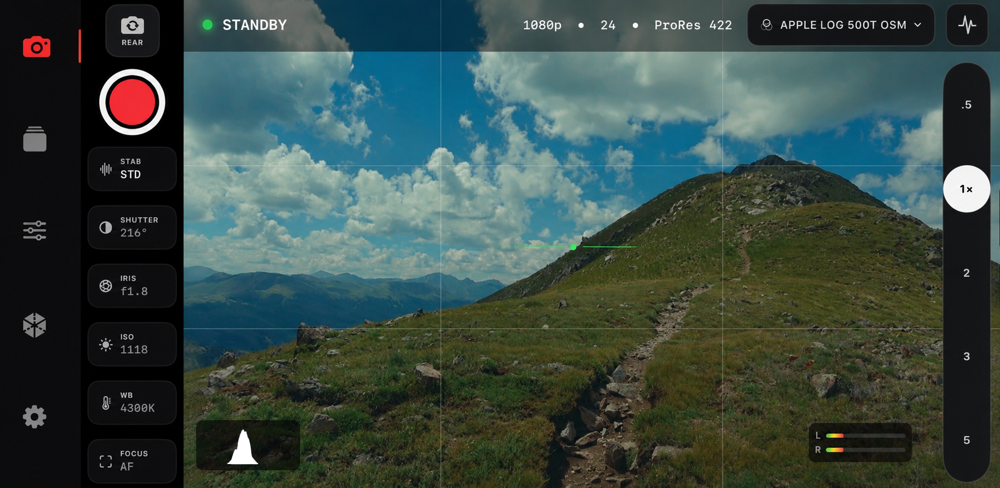
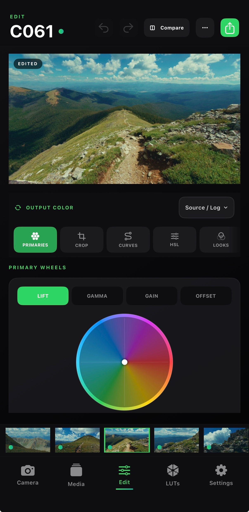

Capture
Log, ProRes, lens switching, monitor assists, and tracking.
CHROMIS FOR IPHONE
Shoot.
Cinematic video, Apple Log, LUTs, scopes, and professional color tools. All on iPhone.
PROFESSIONAL CAMERA
Record in Apple Log, monitor with LUTs, and keep every manual control close.

PROFESSIONAL COLOR
Primary tools, RGB curves, HSL secondaries, scopes, LUTs, and saved Looks.


VISUAL EFFECTS
Record video and camera tracking together, then export for Blender.
WORKFLOW
Chromis keeps every step in one continuous workspace.
Log, ProRes, lens switching, monitor assists, and tracking.
Organize clips, favorite takes, rename, and spot graded media.
Build looks with curves, HSL, scopes, and LUT support.
Save the finished clip from the same creative workspace.
CHROMIS
A complete mobile filmmaking workflow, from capture to final color.